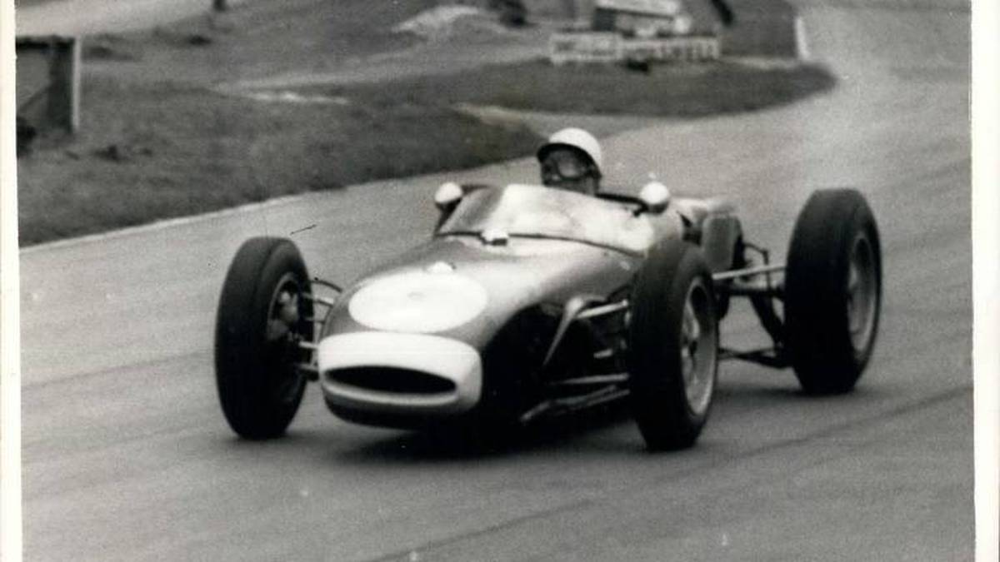

Königsklasse des Motorsports: Die Geschichte der Formel 1
Formel 1 Geschichte: Die Königsklasse im Motorsport wurde 1950 ins Leben gerufen und ist nach wie vor faszinierend. SPORT1 erzählt die Entstehung der F1!
Die Formel 1 ist über 70 Jahre alt. Zahlreiche Fahrer sind Formel 1 Weltmeister geworden, viele Geschichten hat die Königsklasse des Motorsports geschrieben. Im Laufe der Zeit wurden auch viele Regeln in der höchsten Rennklasse verändert.
Wann entsand die Formel 1?
Nach dem Zweiten Weltkrieg beschloss der internationale Rennsportverband FIA (Fédération Internationale de l’Automobile) einheitliche Rennformeln, um bei internationalen Rennen für Chancengleichheit zwischen den teilnehmenden Fahrzeugen zu sorgen. Da es noch keine Meisterschaften gab, galt das Reglement bei einzelnen Rennen. Den Ausschlag für die Gründung der Formel 1 gab die Fédération Internationale de Motocyclisme, der Dachverband der Motorrad-Rennfahrer. Dieser brachte 1949 die Motorrad-Weltmeisterschaft an den Start. Dies veranlasste die FIA, ebenfalls eine WM ins Leben zu rufen. Deren erste Saison fand 1950 statt, das erste Rennen der Formel 1 Geschichte ging am 13. Mai 1950 im englischen Silverstone über die Bühne.
Was waren die Vorläufer der Formel 1?
Veranstaltungen im vierrädrigen Motorsport gibt es bereits seit Ende des 19. Jahrhunderts. So veranstaltete der Automobile Club de France ab den 1880er-Jahren ein jährliches Rennen. Diese Veranstaltungen wurden nachträglich als Grand Prix bezeichnet. Der von 1900 bis 1905 ausgetragene Gordon-Bennett-Cup war die erste Meisterschaft für Automobile. Rennen fanden zu dieser Zeit auf öffentlichen Straßen statt, meist von einer Stadt in eine andere. Das erste Rennen auf einer eigens angelegten Rennstrecke war der Grand Prix von Italien 1922 auf dem Autodromo di Monza. Im gleichen Jahr wurde die Commission Sportive Internationale (CSI) gegründet. Sie legte fortan fest, welche technischen Bedingungen Fahrzeuge erfüllen mussten, die an Rennen teilnehmen. Diese Formeln bildeten letztlich den Grundstein für die Formel 1. Der Motorsport verlor jedoch in den 1920ern an Relevanz. In den 1930er-Jahren dominierte Mercedes-Benz nahezu jeden Grand Prix, weshalb sich das Interesse am Motorsport größtenteils auf andere Rennserien verlagerte. So erfreuten sich Sportwagenrennen in Frankreich großer Beliebtheit, während Rennen in Voiturettes in Großbritannien und Italien angesagt waren. Nach dem Zweiten Weltkrieg rief der Weltverband FIA dann die Formel 1 ins Leben.
Wie verlief die erste Saison der Formel 1 Geschichte?
An der ersten Saison der Formel 1 im Jahr 1950 nahmen acht Teams mit insgesamt 49 Fahrern teil. Die Saison bestand aus sieben Rennen, die in die WM-Wertung eingingen und auf den folgenden Strecken ausgetragen wurden:
- Silverstone Circuit (England)
- Circuit de Monaco (Monaco)
- Indianapolis Motor Speedway (USA)
- Bremgarten-Rundstrecke (Schweiz)
- Circuit de Spa-Francorchamps (Belgien)
- Circuit de Reims-Gueux (Frankreich)
- Autodromo Nazionale Monza (Italien)
Den ersten Grand Prix in der Formel 1 Geschichte gewann der Italiener Guiseppe Farina am 13. Mai 1950 in Silverstone. Ebenso wie seine beiden Verfolger Luigi Fagioli und Reg Parnell war er in einem Alfa Romeo unterwegs. Das zweite Rennen in Monaco gewann der Argentinier Juan Manuel Fangio, ebenfalls in einem Alfa Romeo. Am Rennen in Indianapolis nahm mit dem Belgier Charles van Acker lediglich ein europäischer Fahrer teil. Der Rest der Saison wurde zum Zweikampf zwischen Farina und Fangio. Da Fangio im letzten Rennen ausfiel, wurde Farina zum ersten Formel 1 Weltmeister der Geschichte.
Was waren die Besonderheiten zu Beginn der Formel 1 Geschichte?
Selbstverständlich ist die Formel 1 der Anfangszeit nicht mit der Rennserie von heute zu vergleichen. Sowohl aus technischer Sicht als auch beim Regelwerk gibt es einige Unterschiede.
Streichresultate
Zu Beginn der Formel 1 Geschichte war es Teil der Regeln, dass nicht jedes Ergebnis in die Punktewertung einfloss. Dies war sogar bis 1990 so. Wie viele so genannte Streichresultate es bis dahin in einer Saison gab, änderte sich häufig. So wurden 1950 zum Beispiel nur die besten vier Saisonergebnisse jedes Fahrers gezählt. Gravierende Auswirkungen auf die finale WM-Wertung hatte dies jedoch nicht. Lediglich in der Saison 1988 waren Streichresultate entscheidend für den Ausgang der Weltmeisterschaft. Die Saison bestand aus 16 Rennen, wobei jedem Fahrer die Punkte seiner besten elf Rennen gutgeschrieben wurden. Eigentlich holte der Franzose Alain Prost 105 WM-Punkte, während der Brasilianer Ayrton Senna "nur" auf 94 Zähler kam. Aufgrund der Streichresultate lautete der WM-Endstand jedoch 90 zu 87 für Senna, der deshalb Formel 1 Weltmeister wurde.
Fahrerwechsel
In der Anfangszeit der Formel 1 war es den Fahrern erlaubt, während des Rennens in den Boliden eines anderen Fahrers zu wechseln. Diese Möglichkeit nutzten Piloten zuweilen, wenn ihr Fahrzeug stark beschädigt war. Für die WM-Wertung wurden die erzielten Punkte zu gleichen Teilen unter den Piloten aufgeteilt, die im gleichen Fahrzeug unterwegs waren. Dabei war es unerheblich, welcher Fahrer wie viele Runden absolviert hatte. Besonders interessante Auswirkungen hatte der Fahrerwechsel in der Saison 1956. Schon das erste Rennen in Argentinien gewann Juan Manuel Fangio nur deshalb, weil sein Teamkollege Luigi Musso sein Fahrzeug an ihn abgeben musste. Auch im zweiten Grand Prix in Monaco war Fangio schon ausgeschieden, und nur dank des Boliden von Peter Collins sicherte er sich den zweiten Platz. Im letzten Rennen der Saison in Monza hätte Collins mit einem Sieg Formel 1 Weltmeister werden können, wenn Fangio keine Punkte geholt hätte. Nach gut der Hälfte des Rennens fiel Fangio aufgrund eines Defekts aus, wodurch für Collins der Weg zum Titel frei war. Allerdings entschied sich der Brite dafür, sein Fahrzeug an Fangio abzugeben. Dieser fuhr damit auf den zweiten Rang und wurde Formel 1 Weltmeister. Collins hatte somit freiwillig auf den Titel verzichtet – ein wohl einmaliger Vorgang im Motorsport. Die Saison 1957 war die letzte, in der während der Rennen Fahrerwechsel möglich war.
Rennen ohne WM-Status
Bis in die 1980er-Jahre befanden sich im Saisonkalender der Formel 1 regelmäßig Rennen, deren Ergebnisse nicht in die WM-Wertung eingingen. Gründe dafür gab es einige. So versuchten die Organisatoren beispielsweise, die Formel 1 durch solche Show-Events in bestimmten Regionen interessanter zu machen. Zudem musste auf Rennstrecken, die potentiell in den Veranstaltungskalender der Formel 1 aufgenommen werden wollten, erst eine Art Testlauf stattfinden. In der Saison 1950, der ersten der Formel 1 Geschichte, standen neben den sieben WM-Läufen gleich 17 Rennen auf dem Programm, bei denen keine Punkte vergeben wurden. Das bislang letzte Rennen ohne Weltmeisterschaftsstatus in der Formel 1 war das Race of Champions im April 1983 auf dem Brands Hatch Circuit in England.
Boxenstopps
Boxenstopps gab es schon zum Beginn der Formel 1 Geschichte. Allerdings war es dabei nur vier Mechanikern erlaubt, den Boliden zu betanken, die Reifen zu wechseln und Reparaturen vorzunehmen. Daher dauerte der Aufenthalt eines Fahrzeugs an der Box nicht selten länger als eine Minute. Dazu kam, dass die Mechaniker oftmals erst die notwendigen Maßnahmen einschätzen konnten, als der Bolide vor ihnen stand. Bei Schäden benötigten sie also einige Zeit, um die Ursache auszumachen und zu beheben. In den 1980er-Jahren entwickelte sich der Boxenstopp immer weiter zu einer taktischen Möglichkeit im Rennen. Durch schnelle Aktionen konnten Fahrer ebenso profitieren wie durch Strategien mit der Benzinmenge. Allerdings wurde 2010 das Nachtanken während des Rennens verboten.
Zusammenfassung
Gründung: Die Formel 1 wurde 1950 ins Leben gerufen, um eine Weltmeisterschaft für Fahrer zu schaffen. Das erste Rennen fand am 13. Mai 1950 in Silverstone statt. Entwicklung: In den ersten Jahren dominierten Fahrzeuge von Alfa Romeo. Ab 1958 wurde auch eine Konstrukteurswertung eingeführt. Die Formel 1 hat sich seitdem kontinuierlich weiterentwickelt, sowohl in Bezug auf die Technik als auch auf die Sicherheitsstandards. Sicherheitsmaßnahmen: Nach mehreren tragischen Unfällen in den 1970er und 1990er Jahren wurden erhebliche Verbesserungen in der Sicherheit der Fahrzeuge und der Rennstrecken implementiert.